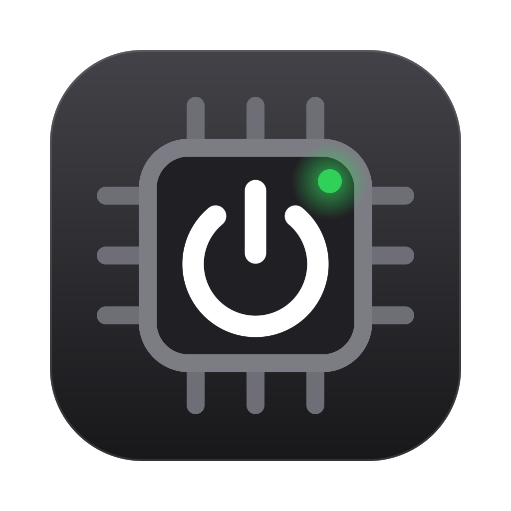

About OpenLAMT

OpenLAMT
Desktop client for Intel AMT.
Independent project, not affiliated with Intel.
What OpenLAMT is
OpenLAMT is a free, local desktop app for Intel AMT on macOS, Windows and Linux. It switches your devices on and off, shows their screen and serial console, boots them from an ISO and manages their AMT settings. It talks to each device directly, without a browser, a server or a cloud account. It aims to be a complete and simple replacement for MeshCommander, for home labs and for IT people who just want to use Intel AMT.
OpenLAMT is made and maintained by Michael Mayer (@Srv-02).
Support
OpenLAMT is a free, independent project. If it saves you a trip to the server room, a coffee helps keep it going.
Found a bug or have an idea? Open an issue on GitHub. Say what you did, what you expected and what happened, and name your OpenLAMT version and operating system. Leave out the names, addresses and passwords of your devices.
License
OpenLAMT is free software under the Apache License 2.0. NOTICE lists every third-party project it includes, with its license.
Intel and AMT are trademarks of Intel Corporation. OpenLAMT is an independent project and is not affiliated with, endorsed by or supported by Intel Corporation.
Credits
OpenLAMT builds on the work of others. Thank you to:
- Michael (Mike) Johanson (@rsdmike) and the team at Intel behind the Device Management ToolkitOpenLAMT talks to Intel AMT through their go-wsman-messages. The remote screen, media and console clients are ported from their ui-toolkit.Apache-2.0
- MeshCommander by Ylian Saint-HilaireThe tool OpenLAMT sets out to replace, and its inspiration. Parts of the remote screen logic are ported from it.Apache-2.0
- FyneThe GUI toolkit OpenLAMT is built with.BSD-3-Clause
- Fyne terminalThe terminal of the serial console.BSD-3-Clause
- go-keyring by ZalandoKeeps your passwords in the system keychain.MIT
- zenityThe native file and folder dialogs on macOS and Windows.MIT
- MCP Go SDKThe official Model Context Protocol SDK behind openlamt-mcp.Apache-2.0
- go-pkcs12 by SSLMateReads .p12 and .pfx files for the certificate import.BSD-3-Clause
- InterThe typeface of the app.OFL-1.1
- appimagetoolBuilds the Linux AppImage.MIT
- GoThe language and standard library.BSD-3-Clause
All third-party libraries and licenses are listed in NOTICE.